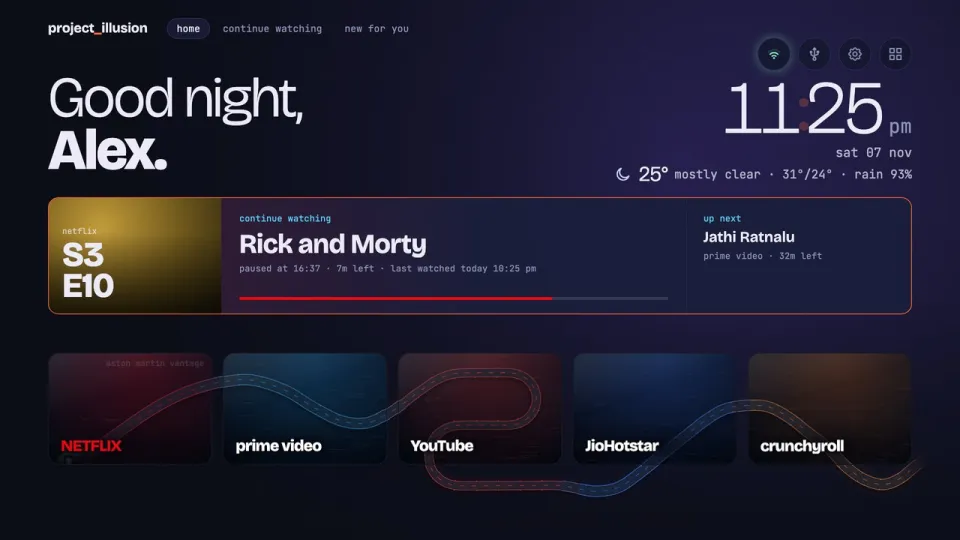

tokwhere
See where your coding agent's tokens went. Reads Claude Code and Codex session logs.
Real numbers from one 24-hour session.
npx github:monoaster/tokwhere --days 7
Open on GitHub
Programmer turned vibe coder. Side projects built late at night, all free and open source.
Scroll to drive
See where your coding agent's tokens went. Reads Claude Code and Codex session logs.
Real numbers from one 24-hour session.
npx github:monoaster/tokwhere --days 7
Open on GitHub

A custom Home for Android TV and Google TV, installed over Wi‑Fi with Claude Code.
Open on GitHubThe road ends here for now. Follow to see the next stop.
Road under construction The next project is being built.
Everything here is free and open source.